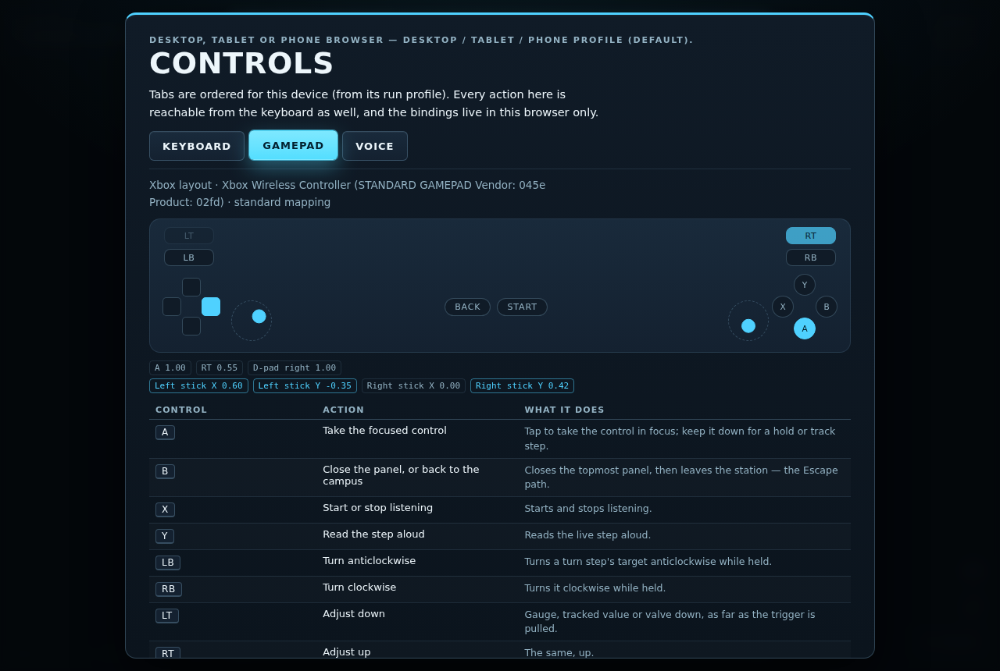
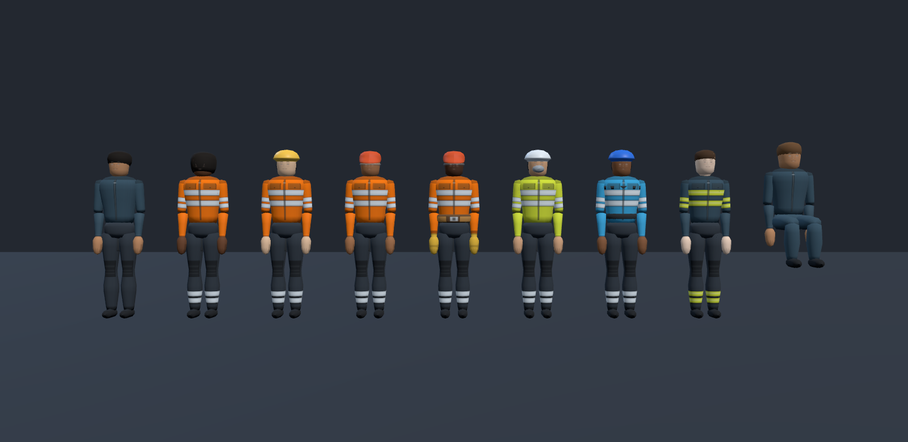
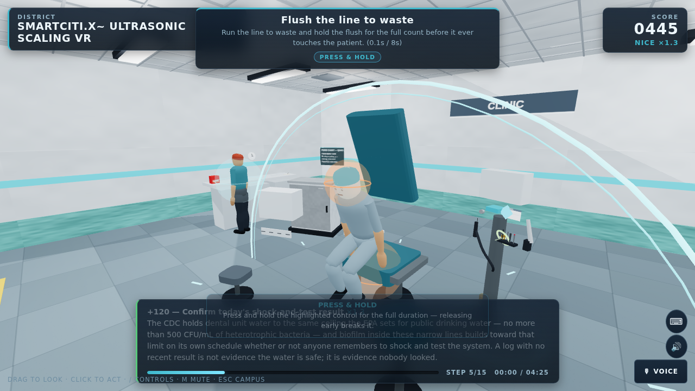
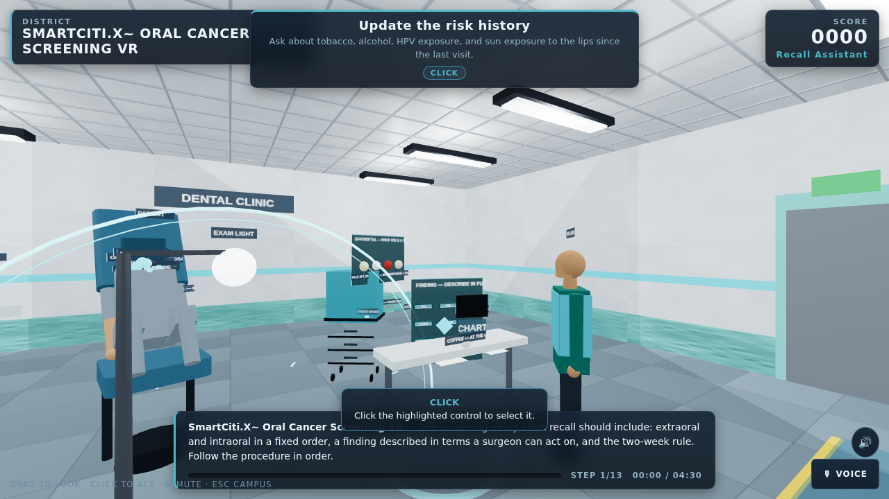

<!-- SmartCiti.X white paper — rendered from SmartCitiX-Whitepaper.md by a small script; edit the Markdown and re-render rather than editing this file. Self-contained: inline CSS, no scripts, screenshots referenced by relative path from docs/screenshots/. -->

<style>
:root{--bg:#f7f5f0;--surface:#ffffff;--ink:#1c1e21;--muted:#5b616b;--rule:#d9d4c9;--accent:#0f6b6d;--accent-ink:#0b4f51;--code-bg:#eeeae1;--quote:#e9e4d8;--shadow:0 1px 2px rgba(0,0,0,.06);--maxw:46rem;--gutter:16px}
@media (prefers-color-scheme: dark){:root:not([data-theme="light"]){--bg:#15181c;--surface:#1d2126;--ink:#e6e4de;--muted:#a3a8b1;--rule:#343a42;--accent:#6fd0cf;--accent-ink:#9fe3e2;--code-bg:#262b31;--quote:#22272d;--shadow:0 1px 2px rgba(0,0,0,.4)}}
:root[data-theme="dark"]{--bg:#15181c;--surface:#1d2126;--ink:#e6e4de;--muted:#a3a8b1;--rule:#343a42;--accent:#6fd0cf;--accent-ink:#9fe3e2;--code-bg:#262b31;--quote:#22272d;--shadow:0 1px 2px rgba(0,0,0,.4)}
.wp{background:var(--bg);color:var(--ink);font:17px/1.6 Georgia,"Iowan Old Style","Palatino Linotype",serif;-webkit-text-size-adjust:100%;margin:0;padding:0 var(--gutter) 4rem;overflow-x:hidden}
.wp *{box-sizing:border-box;max-width:100%}
.wp .inner{max-width:var(--maxw);margin:0 auto}
.wp .wp-head{padding:3rem 0 1.5rem;border-bottom:1px solid var(--rule);margin-bottom:2rem}
.wp .kicker{font:600 .78rem/1 system-ui,-apple-system,"Segoe UI",Roboto,sans-serif;letter-spacing:.14em;text-transform:uppercase;color:var(--accent);margin:0 0 1rem}
.wp h1{font:700 clamp(2rem,6vw,3rem)/1.1 system-ui,-apple-system,"Segoe UI",Roboto,sans-serif;letter-spacing:-.02em;margin:0 0 1rem}
.wp .lede{font-size:1.2rem;line-height:1.5;color:var(--ink);margin:0 0 1rem}
.wp .note{font-size:.95rem;color:var(--muted);margin:0}
.wp h2{font:700 clamp(1.5rem,4.5vw,2rem)/1.2 system-ui,-apple-system,"Segoe UI",Roboto,sans-serif;letter-spacing:-.015em;margin:3rem 0 1rem;padding-top:1.5rem;border-top:1px solid var(--rule)}
.wp h3{font:600 1.2rem/1.3 system-ui,-apple-system,"Segoe UI",Roboto,sans-serif;margin:2rem 0 .6rem;color:var(--accent-ink)}
.wp p{margin:0 0 1rem}
.wp a{color:var(--accent-ink);text-decoration-thickness:1px;text-underline-offset:2px}
.wp code{font:.86em/1.4 ui-monospace,SFMono-Regular,Menlo,Consolas,monospace;background:var(--code-bg);padding:.08em .35em;border-radius:4px;word-break:break-word}
.wp ul,.wp ol{padding-left:1.4rem;margin:0 0 1rem}
.wp li{margin:.3rem 0}
.wp blockquote{margin:1.2rem 0;padding:1rem 1.2rem;background:var(--quote);border-left:4px solid var(--accent);border-radius:0 8px 8px 0}
.wp blockquote p{margin:0;font-size:1.05rem}
.wp .toc{background:var(--surface);border:1px solid var(--rule);border-radius:10px;padding:1.2rem 1.4rem;margin:0 0 2rem;box-shadow:var(--shadow)}
.wp .toc h2{border:0;margin:0 0 .6rem;padding:0;font-size:1rem;text-transform:uppercase;letter-spacing:.1em;color:var(--muted)}
.wp .toc ol{margin:0;padding-left:1.4rem;font:1rem/1.7 system-ui,-apple-system,"Segoe UI",Roboto,sans-serif}
.wp .toc a{text-decoration:none}
.wp .toc a:hover{text-decoration:underline}
.wp .tablewrap{overflow-x:auto;margin:1.2rem 0;border:1px solid var(--rule);border-radius:8px;background:var(--surface);-webkit-overflow-scrolling:touch}
.wp table{border-collapse:collapse;width:100%;min-width:32rem;font:.9rem/1.45 system-ui,-apple-system,"Segoe UI",Roboto,sans-serif}
.wp th,.wp td{text-align:left;vertical-align:top;padding:.55rem .7rem;border-bottom:1px solid var(--rule)}
.wp th{background:var(--code-bg);font-weight:600;position:sticky;top:0}
.wp tbody tr:last-child td{border-bottom:0}
.wp figure{margin:1.4rem 0;background:var(--surface);border:1px solid var(--rule);border-radius:10px;overflow:hidden;box-shadow:var(--shadow)}
.wp figure img{display:block;width:100%;height:auto}
.wp figcaption{font:.85rem/1.5 system-ui,-apple-system,"Segoe UI",Roboto,sans-serif;color:var(--muted);padding:.7rem .9rem}
.wp .letter{background:var(--surface);border:1px solid var(--rule);border-radius:12px;padding:1.5rem clamp(1rem,4vw,2.2rem) 2rem;margin-top:3rem;box-shadow:var(--shadow)}
.wp .letter h2{border:0;padding-top:0;margin-top:0}
.wp .signoff{margin-top:2rem;font-style:italic}
.wp strong{font-weight:700}
@media (max-width:640px){.wp{font-size:16px}.wp h3{font-size:1.1rem}.wp .toc{padding:1rem}.wp th,.wp td{padding:.45rem .5rem}}
@media print{.wp{background:#fff;color:#000}.wp .toc,.wp figure{break-inside:avoid}.wp h2{break-before:page}.wp .tablewrap{overflow:visible;border:0}}
</style>
<article class="wp"><div class="inner">
<header class="wp-head"><p class="kicker">White paper</p><h1>SmartCiti.X — a white paper</h1>
<p class="lede">Union-trade AR/VR procedure training that runs in a browser, proves what it scores, and says plainly what it has not yet proven.</p>
</header>
<p><em>Written 2026-09-23 from the repository as it stands on that date. Every number in this paper is read from a file in the repository — <code>WebXR/smartcity/catalog.json</code>, <code>tools/check_all.mjs</code>, <code>tools/standards.json</code>, <code>tools/eval_content.mjs</code>, the READMEs and the <code>docs/</code> tree — and the file is named beside the number where it matters. Where the repository says a thing is unverified, assumed or a stub, this paper says so in the same words. Nothing here names a customer, a revenue figure, a partner agreement or a quotation, because the repository holds none.</em></p>
<nav class="toc" aria-label="Contents"><h2>Contents</h2><ol><li><a href="#1-executive-summary">Executive summary</a></li><li><a href="#2-the-problem">The problem</a></li><li><a href="#3-the-current-version">The current version</a></li><li><a href="#4-the-stack">The stack</a></li><li><a href="#5-compliance-and-safety-posture">Compliance and safety posture</a></li><li><a href="#6-roadmap">Roadmap</a></li><li><a href="#7-questions-and-answers">Questions and answers</a></li><li><a href="#8-a-letter-to-prospective-investors">A letter to prospective investors</a></li><li><a href="#9-appendix">Appendix</a></li></ol></nav>
<section id="1-executive-summary" class=""><h2>1. Executive summary</h2>
<p>SmartCiti.X is a network of browser-based AR/VR training simulators for union trades. A learner opens a web page, walks into a generic but fully dressed job site, and works a real ordered procedure — a lockout, a confined-space entry, a chairside turnover — with their hands. The engine scores every touch, seeds real hazards, interrupts the learner mid-step with the kind of event that actually hurts people, and writes an auditable record. There is no server to stand up, no app store, no account system: the whole thing is static files served over HTTPS.</p>
<p>By the numbers, as the catalog records them on 2026-09-23: <strong>225 stations</strong> (216 SmartCiti.X stations, of which two are flat sourced briefings, plus the 9 rooms of the sibling Trade Skills Simulator) across <strong>17 trade categories</strong>, organised into <strong>24 training programmes</strong>, each naming a real union and the standard the block maps to. Together they hold <strong>2,940 scored steps</strong>, <strong>917 seeded hazards</strong> and <strong>442 interruptions</strong>. Every station cites at least one entry in a <strong>standards registry of 285 entries across 75 publishing bodies</strong>, of which 242 carry a citation form the authors are sure of and 43 are carried as body and title only, marked unverified. A <strong>competency layer of 34 competencies</strong> over 213 distinct stations and 69 standards sits above the game badges and applies one stated mastery rule. <strong>29 headless checkers</strong> gate every commit; the content evaluation ranks the corpus at a <strong>mean of 95 out of 100</strong> over all 225 procedures. <strong>33 head-worn device profiles</strong> in five classes decide how a station renders on hardware from a Quest to a hardhat monocular. Three input layers — keyboard, gamepad and voice — are checked so that nothing spoken can complete a step.</p>
<p>What it proves today is narrower than what it contains, and the repository is careful to say so. Records are held in the learner's browser until exported as CSV, xAPI 1.0.3 or Open Badges 2.0; the badges are self-asserted until a hall hosts them. Identity is a launch context handed in by an LMS or a URL, not authentication; the one server in the repository, an LTI 1.3 relay, verifies a signed launch and has been proven against a stand-in platform, not registered with a real one. The practitioner review packet shows an automated preview pass on every section and a practitioner sign-off on none. No headset performance pass has been recorded, though the instrument to record one exists. The adaptive-content client (Orbis-Stable) and the Holodeck's prompt interpreter are seams with no live model behind them. There is no sign-in page and no homepage; there is no contract with any host platform in the repository, and the name Cognition.X appears exactly once, as one example of a host that could receive credentials.</p>
<p>The case for funding or adopting it rests on three things the repository does demonstrate: a deterministic engine whose scoring, pass rule and mastery rule are stated once in code and read everywhere; a content corpus built and checked at scale, with the tooling to grow it; and a habit of writing down what is unverified rather than papering over it. The roadmap is ordered by dependency, and the letter at the end says what money would buy in that order.</p>
</section>
<section id="2-the-problem" class=""><h2>2. The problem</h2>
<h3 id="union-and-trade-training-today">Union and trade training today</h3>
<p>A journeyman is made by doing the job beside someone who already knows it, and a union training centre — a JATC, a training fund, a hall — exists to make that safe and repeatable. The repository's own framing of the gap is in <code>WebXR/shared/incidents.js</code>: &quot;A toolbox talk is somebody reading out what went wrong on the job and the crew nodding. Nobody rehearses it, so the next crew meets the same event cold.&quot; The procedures that kill people are written down in OSHA subparts, NFPA documents and apprenticeship standards, and taught from slides, because the only place to rehearse a chlorine leak or a lock coming off a hasp is the one place nobody should.</p>
<p>The training centre's other problem is proof. A safety director does not sign a game score; what they sign, in the words of <code>competency.js</code>, is &quot;a named thing a journeyman can do, tied to the standards a body actually publishes, demonstrated by passing named stations under one stated rule that never bends.&quot; A hall needs a transcript that says which standard, which procedure, which run, and why a near miss did not count.</p>
<h3 id="what-a-simulator-has-to-prove">What a simulator has to prove</h3>
<p>The repository's design documents set out the bar a simulator has to clear before its records mean anything, and it is a useful list because it is the list the platform is built against:</p>
<ul><li><strong>Order is assessed, not suggested.</strong> Reaching for a later step's control is its own scored mistake with a trade-specific reason (<code>WebXR/trades/README.md</code>). A quiz with a 3D background does not do this.</li><li><strong>Hazards carry consequences.</strong> Every station seeds real traps — another worker's padlock, a water jug beside a grease fire, a production credential next to the staging ones — and touching one costs double and explains what would have happened.</li><li><strong>The dangerous thing is not the procedure.</strong> <code>WebXR/smartcity/README.md</code>: &quot;Every step kind in this engine asks the same question: do you know what comes next. That is worth assessing and it is not what gets people hurt. What gets people hurt is the thing that happens while they are busy.&quot; A simulator has to interrupt the learner and score whether they noticed.</li><li><strong>The second attempt has to still measure something.</strong> <code>variants.js</code>: a learner who repeats a station &quot;learns the answer key … and the score stops measuring competence and starts measuring recall.&quot;</li><li><strong>The record has to be attributable and exportable</strong> to the formats a hall, an HR system and a Learning Record Store already accept.</li><li><strong>Nothing may be invented.</strong> The station brief that every authoring team reads (<code>tools/briefs/station-brief.md</code>) forbids naming a real site, a real person, or &quot;a clause number you are not sure of — name the body instead.&quot; A drill that teaches an invented clause on a union floor, as <code>incidents.js</code> puts it, &quot;is how a platform loses a hall.&quot;</li></ul>
<h3 id="why-headset-fleets-fail-in-the-field">Why headset fleets fail in the field</h3>
<p>The device guide (<code>docs/devices.md</code>) is unusually direct about the hardware problem. The head-worn devices a site crew actually wears &quot;are mostly assisted-reality or optical see-through systems whose browsers offer no immersive WebXR session,&quot; and the headsets a training centre buys for its classroom &quot;are a second, different fleet.&quot; A procedure &quot;that renders a full plaza with rain at 2× pixel ratio behind a 28px HUD is unreadable on an 854-pixel-wide monocular display clipped to a hardhat&quot; (<code>WebXR/shared/devices.js</code>).</p>
<p>Three further failure modes the repository names:</p>
<ol><li><strong>The device is not PPE.</strong> &quot;A smart glass is not automatically safety eyewear,&quot; and a VR headset &quot;is never worn with a hardhat.&quot; The device layer records vendor safety statements and marks them as claims to verify, never as certification.</li><li><strong>Detection lies.</strong> Apple's Safari on visionOS &quot;sends a desktop-Mac user agent on purpose&quot;; PC-tethered headsets show the PC's browser. A wrong guess must change only the rendering profile, never the procedure, and the learner has to be told what was chosen.</li><li><strong>Nobody has measured it.</strong> The repository's own enterprise-readiness note (<code>WebXR/smartcity/README.md</code>) lists &quot;a headset pass on Meta Quest for frame rate, comfort and in-headset legibility&quot; as not yet done: &quot;the instrument to record that pass now exists (<code>?perf=1</code>) … the numbers do not.&quot; A fleet purchase made before that pass is a fleet purchase made on an assumption.</li></ol>
</section>
<section id="3-the-current-version" class=""><h2>3. The current version</h2>
<h3 id="3-1-by-the-numbers">3.1 By the numbers</h3>
<p>All counts are from the generated catalog (<code>WebXR/smartcity/catalog.json</code>, <code>generatedAt</code> 2026-09-23), the output of <code>node tools/check_all.mjs</code> run the same day, and <code>tools/standards.json</code>. Some READMEs and the review packet carry older counts (181 stations, 22 programmes, 89 sections); the catalog and the checkers are the current source.</p>
<div class="tablewrap"><table><thead><tr><th>Measure</th><th>Value</th><th>Source</th></tr></thead><tbody><tr><td>Stations in the shared catalog</td><td>225 (216 SmartCiti.X + 9 Trade Skills rooms)</td><td><code>catalog.json</code></td></tr><tr><td>Flat (non-walkable) briefing stations</td><td>2 — Hunters Point Briefing, Can We Live?</td><td><code>catalog.json</code> <code>flat</code></td></tr><tr><td>Trade categories</td><td>17</td><td><code>catalog.json</code> <code>categories</code></td></tr><tr><td>Training programmes</td><td>24</td><td><code>catalog.json</code> <code>curricula</code></td></tr><tr><td>Scored steps across the roster</td><td>2,940 (median 13 per station; range 10–16)</td><td><code>catalog.json</code></td></tr><tr><td>Seeded hazards</td><td>917</td><td><code>catalog.json</code></td></tr><tr><td>Interruptions</td><td>442 across 221 procedures, every one visibly changing the scene</td><td><code>check_interrupts.mjs</code></td></tr><tr><td>Step kinds</td><td>8 — select, sequence, find, gauge, hold, track, turn, drag</td><td><code>shared/game.js</code></td></tr><tr><td>Weather kinds</td><td>7 — clear, overcast, rain, fog, wind, storm, smoke</td><td><code>catalog.json</code> <code>weather</code></td></tr><tr><td>Indoor stations / interior styles</td><td>103 / 6 (plant, service, shop, garage, theatre, datahall)</td><td><code>catalog.json</code>, README</td></tr><tr><td>Headless checkers</td><td>29, all passing</td><td><code>tools/check_all.mjs</code></td></tr><tr><td>Content-eval corpus mean</td><td>95 / 100 over 225 procedures</td><td><code>tools/eval_content.mjs</code></td></tr><tr><td>Standards registry</td><td>285 entries, 75 bodies; 242 verified citation form, 43 unverified</td><td><code>tools/standards.json</code></td></tr><tr><td>Competencies</td><td>34 (24 programme, 10 core) over 213 stations and 69 standards</td><td><code>check_competency.mjs</code></td></tr><tr><td>Device profiles</td><td>33 devices, 6 run profiles; 22 detected by user agent, 11 URL-only</td><td><code>check_devices.mjs</code></td></tr><tr><td>Device classes</td><td>monocular 8, goggle 9, helmet 3, mr 2, vr 11</td><td><code>check_devices.mjs</code></td></tr><tr><td>Input methods</td><td>5 keyboard presets × 13 actions; 15 gamepad buttons + 2 sticks; 26 voice commands</td><td><code>check_input.mjs</code></td></tr><tr><td>Apps</td><td>SmartCiti.X, Trade Skills Simulator, Holodeck, portal; plus the instructor console and the credential verifier; plus the older Safety Campus companion page</td><td><code>WebXR/</code></td></tr><tr><td>Global level ladder</td><td>33 levels in 9 named tiers, shared by three apps</td><td><code>shared/game.js</code></td></tr><tr><td>Mesh budget</td><td>320 per SmartCiti.X station, 430 per Trade Skills room; all 225 inside</td><td><code>check_budget.mjs</code></td></tr><tr><td>Shipped binary models</td><td>1 (<code>guide-worker.glb</code>, CC-BY 4.0)</td><td><code>check_models.mjs</code></td></tr><tr><td>Commits</td><td>222, from 2026-07-17 to 2026-09-23</td><td><code>git log</code></td></tr></tbody></table></div>
<p>Stations by category (catalog, 2026-09-23): Culinary &amp; Hospitality 33; Community Environmental Justice 26; Emergency Services 21; Dental &amp; Oral Health 20; Water &amp; Environmental 16; Maritime &amp; Ports 15; Environmental Monitoring 15; Construction &amp; Structural Trades 13; Energy &amp; Power 12; Sewing &amp; Garment Trades 10; Building Systems &amp; Facilities 8; Entertainment &amp; Live Events 7; Trade Skills Simulator 7; Mobility &amp; Transit 6; Connectivity &amp; Telecom 6; Manufacturing &amp; Automation 6; Surface Prep &amp; Coatings 4. The SmartCiti.X README states the growth target as 33 stations per category.</p>
<p>The 24 programmes: Inside Wireman — First Period (8 stations); Confined Space — Entry and Rescue (4); Working at Height — Fall Protection (5); Hazmat and Environmental Response (6); Rigging and Lifting (5); Stationary Engineer — Building Plant (5); Port and Terminal Operations (4); Transit and Ramp Operations (5); Energy Transition Systems (5); Live Events Production (4); Hunters Point Clean-up and Bay Restoration (26); Culinary — The Working Kitchen (16); Dental Hygiene — Unspoken Smiles (16); Dental Careers — Unspoken Smiles (6, with two slots open); Bartending — Behind the Bar (16); Hunters Point Edition — Can We Live? (26); Sewing and Garment Trades (11); Bridge and Structural Trades (4); Hotel Workers — Back of House (4); Builders — Carpenters, Laborers and Masons (4); First Responders — Fire, EMS, Police, Crisis and Relief (16); Situational Awareness — Interruption Drill (22); Ports, Maritime and Bay Ecology (11); Air Quality — Monitoring and Control (6). Every programme carries the same completion rule: &quot;every station has a passing attempt (stars &gt;= 2, no unsafe action).&quot;</p>
<h3 id="3-2-the-procedure-engine-and-the-step-kinds">3.2 The procedure engine and the step kinds</h3>
<p><code>WebXR/shared/game.js</code> is the one engine every app runs. Its header states the contract: &quot;A room supplies an ordered list of steps. The engine owns correctness: it decides whether an interaction advances the procedure, applies score, and produces the coaching line the HUD shows. Rooms never score themselves, so the assessment stays deterministic and auditable — the same contract the Unity build uses.&quot;</p>
<p>Eight step kinds cover what a hand does on a job. <strong>select</strong> is a single correct control; <strong>sequence</strong> is an ordered set; <strong>find</strong> is a set in any order; <strong>gauge</strong> is an analogue setting scored inside a band, so &quot;just barely right&quot; and &quot;dead centre&quot; differ; <strong>hold</strong> must be held for its seconds and restarts if released early (the 20-second handwash, the post-weld fire watch); <strong>track</strong> is a drifting reading the learner keeps in band; <strong>turn</strong> is a valve or handle rotated through its turns; <strong>drag</strong> is pick-and-place onto a target. The station brief requires 12–15 steps over at least five kinds per station, with a <code>why</code> on every step whose median length is at least 200 characters and states &quot;the consequence or mechanism a journeyman would give; never padding.&quot;</p>
<p>Scoring constants are exported once and read by everything else: 100 points per correct step times the combo; a wrong control costs 25; a registered hazard costs 50 and is recorded as an unsafe action; the combo climbs 0.1 per clean step to a cap of 2.0×; finishing under par adds 2 points per second saved. Stars, not score, decide whether a run counts: three for no corrections inside par, two for at most one correction inside 1.5× par, one otherwise.</p>
<h3 id="3-3-interruptions">3.3 Interruptions</h3>
<figure><figcaption>An interruption firing mid-step: the alarm banner over the station, the scene changed, the learner's own clock running.</figcaption></figure>
<p>An interruption &quot;is not a step. It arrives unannounced partway through a step the learner is already working, it runs on its own clock, and the learner has to break off, deal with it and come back.&quot; Every station is required to carry two. Scoring is deliberately asymmetric: catching one is worth 120 points plus up to 60 for speed, &quot;because noticing is the harder thing and the one nobody practises&quot;; missing one, or answering with the wrong control, counts as an unsafe action and lands on the same field the pass rule and badges read. &quot;A run can be procedurally perfect and still fail on the alarm it slept through, which is the point.&quot;</p>
<p>Two rules are enforced by <code>tools/check_interrupts.mjs</code>: an interruption must visibly change the world (a fan stops and its lamp goes red; a lock is gone from the hasp) — &quot;an alarm you can only read is a caption&quot; — and its answer must not be the control the learner is already holding, because &quot;that is not an interruption, it is a nudge.&quot; 442 interruptions across 221 procedures pass these rules today. The <strong>Situational Awareness — Interruption Drill</strong> programme collects 22 stations a learner may already know and reports an <code>attention</code> figure — interruptions caught against dropped — separately from the station count, because &quot;passing the procedure and noticing the alarm are two different competencies.&quot;</p>
<h3 id="3-4-hazards">3.4 Hazards</h3>
<p>Every walkable station seeds four hazards on registered objects (the brief's requirement; the corpus holds 917). Touching one costs 50 points, is recorded as an unsafe action, and explains its consequence in text the accessibility checker requires to be a full sentence. In the two flat stations the hazards are unsafe conclusions rather than objects — &quot;treating a parcel as open ground, swapping a clean sample, silencing a dust monitor, dismissing the community's monitors&quot; — scored on the same engine. The instructor console can switch a session between <strong>Assess</strong> (an unsafe action counts) and <strong>Coach</strong> (called out once, taken back off the count); the choice is written onto the record as <code>hazardMode</code>.</p>
<h3 id="3-5-the-emotional-intelligence-guide-and-the-check-in">3.5 The emotional-intelligence guide and the check-in</h3>
<p><code>WebXR/shared/ei-guide.js</code> decides the tone of what is said around a score. Its rule set is the one &quot;a good peer-support trainer follows: name what happened in one plain sentence, say what to do next, never blame, never minimise, and after a hard run ask how the person is and point at the real support line.&quot; The file's own example: a first responder who missed a Mayday &quot;does not need 'Unsafe action detected'. They need 'You missed the Mayday while the line was stretched. Next time, the radio wins. Reset and go again.'&quot;</p>
<p>Every results card ends with an unscored check-in — &quot;How are you doing after that run?&quot; with three answers, Steady, A bit shaken, Need a minute — and a rough run adds the pointer to the local's peer-support or EAP line (<code>supportLine</code>). Answers are stored only in the learner's own browser, never transmitted, and are not part of any export (<code>docs/ei-guide.md</code>). The First Responder series brief makes the human side procedure rather than decoration: the words said to a person in crisis, the check on a partner and the debrief are scored steps, and the interruptions are &quot;the human ones: a bystander filming, a partner freezing, a family member arriving.&quot;</p>
<h3 id="3-6-pre-brief-and-debrief">3.6 Pre-brief and debrief</h3>
<p>The first run of any walkable station opens on a <strong>pre-brief</strong>: the procedure as study material, every step and its reason, the union and certification it maps to, and how many hazards are seeded — never which. Reading it stamps the shared profile and the run that follows starts *prepared*, earning the engine-wide Prepared award and a 10% score bonus. Skipping is allowed and costs only that. The README calls it the flipped classroom: &quot;learn the procedure first, then prove it in the simulator.&quot;</p>
<p>At the other end, the <strong>step debrief</strong> times every step and shows one row per step on the results screen, toned clean, corrected or unsafe, with two lines naming the step that took longest and the step that gave the most trouble — &quot;the two an instructor asks about first.&quot; The step log persists on the record and is mapped into xAPI result extensions.</p>
<h3 id="3-7-gamification-and-the-competency-tier-above-it">3.7 Gamification, and the competency tier above it</h3>
<figure><figcaption>The Proof tab's competency cards: status chip, stations met against required, the standards evidenced, and the reason a best run did not count.</figcaption></figure>
<p>The motivational layer is deliberately separate from the proof layer. Each station has its own five-tier rank ladder tracked by its own XP; one account-wide level runs 1 to 33 in nine trade-apprenticeship tiers (Trainee through Apprentice, Journeyworker, Technician, Specialist, Foreman, Master, Certified Master and Legend at 33), shared by SmartCiti.X, Trade Skills Simulator and Holodeck; leaderboards are per station and per device, &quot;arcade-cabinet style.&quot; Three stars earn a station's badge.</p>
<p>Above that sits <code>WebXR/shared/competency.js</code>, &quot;the sober tier above the badges.&quot; A competency is &quot;a named thing a journeyman can do, tied to the standards a body actually publishes, demonstrated by passing named stations under one stated rule that never bends.&quot; That rule is the mastery rule, stated once in code and quoted in full in the appendix: two or more stars, zero unsafe actions, every interruption answered, and time within 1.5× par. One mastery run on enough of a competency's stations earns *demonstrated*; mastery runs on three different days earn *consistent*. &quot;No other rule earns a competency. There is no partial credit, no curve, and no second rule for a learner who nearly made it.&quot; A near miss is reported with the first reason it fell short, in a fixed order, &quot;because a learner who touched a live bus and also ran long needs to hear about the live bus.&quot;</p>
<p>There are 34 competencies: 24 programme competencies that mirror the curricula blocks one for one (a checker fails the build if they drift), each requiring mastery on half its stations capped at six, and 10 cross-programme core competencies — fall protection, lockout/tagout, confined space, hot work, trenching, crane and rigging, respiratory protection, hazard communication, emergency response and trauma-informed practice — that name their required count outright. A competency is dated by its evidence, so an exported badge is issued on the day it was earned rather than the day somebody pressed export.</p>
<h3 id="3-8-proof-of-training-and-open-badges">3.8 Proof of training and Open Badges</h3>
<figure><figcaption>The proof transcript: every attempt behind every claim, with score, stars, unsafe actions, interruptions answered of fired, time against par, and whether it counted.</figcaption></figure>
<p>Every finished run appends one immutable entry to the training record (<code>WebXR/shared/records.js</code>): station, category, union and certification, score, stars, corrections, unsafe actions, time against par, the interruption tally, any instructor actions, and a pass verdict under the rule &quot;two or more stars with no unsafe action.&quot; The record carries &quot;nothing it must not (no biometrics, no free text beyond the learner's own crew tag).&quot;</p>
<p>Exports are the hand-off. <strong>CSV</strong> (RFC 4180) for a spreadsheet, HR system or a hall's register. <strong>xAPI 1.0.3</strong> statements with <code>passed</code>/<code>failed</code> verbs, the station as a <code>simulation</code> activity, and category, certification, stars and unsafe-action count as extensions. <strong>Open Badges 2.0</strong> assertions — a station badge for every passing run on a station with a real certification, and a competency badge for every demonstrated competency, carrying the standards as OB <code>alignment</code> entries, the station and attempt ids, and the mastery rule text in the criteria narrative. The <strong>Proof</strong> tab of the records overlay shows competency cards, the proof transcript (every attempt behind every claim, and why a run did not count) and the scoring rubric read straight from <code>game.js</code>'s constants. A print transcript is built as DOM text nodes only, &quot;the last place to hand markup a chance to run.&quot;</p>
<p>Two limits the repository states in its own words: &quot;These are self-asserted by a static page: hosting the BadgeClass and Assertion URLs under an issuer is what makes them verifiable,&quot; and &quot;Passing a simulator evidences readiness for the named certification; it is not the certification.&quot; The credential verifier at <code>WebXR/verify/</code> lets a third party check an exported assertion and returns one of three honest verdicts: a structural pass without a hosted match is &quot;self-asserted&quot;, a hosted match is &quot;the issuing hall stands behind it&quot;, a mismatch is &quot;altered.&quot; It flags the <code>smartciti.example</code> placeholder home that means the hall never hosted the assertion.</p>
<h3 id="3-9-the-standards-registry-and-the-eval">3.9 The standards registry and the eval</h3>
<p><code>tools/standards.json</code> is &quot;the one place a standard, code or union training programme this platform teaches against is written down&quot;: id, body, title, the catalog categories it governs (<code>scope</code>), the forms a station's own text cites it by, and <code>source</code> — <code>verified</code> where the citation form is one the authors are sure of, <code>unverified</code> where the entry is carried as a body and a title because &quot;the exact designation, edition or course code is not certain — there the claim is the body and the subject, not the number.&quot; On 2026-09-23 it holds 285 entries across 75 bodies, 242 verified and 43 unverified. The largest families are OSHA (65 entries), NFPA (29), the unions' own apprenticeship and training funds (29), ANSI/ASSP (20) and EPA (16); most of the union entries are marked unverified by design, since a training fund's course code is not something to guess. <code>docs/standards/README.md</code> renders the registry; <code>docs/compliance/compliance-matrix.md</code> is generated from the station sources and maps every procedure to the standards it cites and every standard to the procedures that carry it. The compliance README is explicit that the matrix &quot;maps what is taught. It is not a certification of compliance with any standard.&quot;</p>
<p><code>tools/check_standards.mjs</code> is the gate: every station must cite at least one registered standard in scope for its category. <code>tools/eval_content.mjs</code> is the ranking: eight weighted dimensions — variety (0.18), decisions (0.20), explanation (0.18), grounding (0.14), standards (0.14), feedback (0.15), scene (0.10), originality (0.05) — scored per station and printed worst-first. The standards dimension is the share of a station's cited authorities that resolve to a registry entry governing its category, less a penalty for citing out of scope, &quot;which is how a code borrowed from somebody else's trade becomes visible.&quot; The originality dimension penalises the closest prose match between any two stations. The eval &quot;deliberately does NOT fail a build … wiring it into check_all would turn an opinion into a gate and start producing stations written to satisfy the metric.&quot; On 2026-09-23 the corpus mean is 95 over 225 procedures; the two flat briefings score 73 (they have two step kinds and no interruptions by design) and the lowest walkable station scores 90.</p>
<h3 id="3-10-the-instructor-console-and-the-observer-protocol">3.10 The instructor console and the observer protocol</h3>
<figure><figcaption>The instructor console's Live class view: one card per session with step, score, stars, corrections, unsafe actions and the last notable events.</figcaption></figure>
<p><code>WebXR/instructor/</code> is the console for the person running the class. It &quot;owns no simulation, no scoring and no records: it speaks only the observer protocol (<code>WebXR/shared/observer.js</code>) and reads the static catalog for its roster.&quot; Three views: <strong>Live class</strong>, one card per session with the step, score, stars, corrections, unsafe actions, interruptions answered, the last twelve notable events and the verdict; <strong>Roster</strong>, the whole catalog with search, from which a station or programme can be sent to one learner or every live session; <strong>Session log</strong>, both directions, exportable as CSV, gone when the page closes.</p>
<p>Nine commands — roll call, note, hold/release, open, fire an interruption, set weather, set device profile, coach/assess, assign a programme — each of which &quot;must exist as a command the learner app answers, must be logged in the learner's record, and must have a learner-visible effect.&quot; A command the app cannot honour is refused with the reason and not recorded. Every honoured command is appended to the learner's attempt as an <code>instructorAction</code>, &quot;so a run driven by an instructor is never mistaken for one the learner drove alone.&quot; Untrusted text — crew tags, notes, alerts — is set as text nodes; <code>tools/check_console.mjs</code> fails the build if markup assignment appears anywhere in the console.</p>
<p>The default transport is a browser <code>BroadcastChannel</code>, same-origin and same-device: &quot;a hall with a row of laptops, or headsets mirrored to one screen.&quot; For an instructor on another machine both sides accept <code>?relay=&lt;ws url&gt;</code>; <code>tools/relay_server.mjs</code> is &quot;a dumb fan-out&quot; whose header says what it is not: &quot;authentication, encryption or an audit trail. Anyone who can reach the port can send commands to every learner on it.&quot; The protocol is at version 2 and still accepts version 1.</p>
<h3 id="3-11-device-profiles-and-the-controls-layer">3.11 Device profiles and the controls layer</h3>
<figure><figcaption>Trench Box under the assisted-reality profile (?device=realwear-navigator-520): flat dark scene, HUD at 1.5x, voice prompted.</figcaption></figure>
<figure><figcaption>The Controls panel's Gamepad tab: the pad drawn from DOM shapes, pressed buttons lit, the live axis readout and the button map.</figcaption></figure>
<p><code>WebXR/shared/devices.js</code> is &quot;the one place a headset is described; app code reads a profile, never sniffs a user agent itself&quot; (<code>tools/briefs/interface-brief.md</code>). Thirty-three devices in five classes — vr, mr, goggle, monocular, helmet — each map to one of six run profiles that decide pixel ratio, shadows, whether the weather layer and the skyline are built, HUD and target scale, contrast, whether the scene sits on black (optical see-through: black is transparent), which entry mode the intro offers first, and what the select verb is called in a hint (a click, a trigger, a pinch, a touchpad, a spoken word). Detection is by <code>?device=</code> on the URL first, then user agent, then a small-monocular screen heuristic, else desktop; &quot;a wrong guess only changes the profile, never the procedure, and the intro names what it chose so a learner can correct it.&quot; User-agent rules exist only for browsers known to announce themselves (22 devices); the other 11, Apple Vision Pro above all, are URL-only, and <code>tools/check_devices.mjs</code> proves no rule shadows another. No field-of-view or resolution figure is recorded, &quot;because none was verified.&quot; The full table is in the appendix.</p>
<p>The controls layer (<code>WebXR/shared/input.js</code>, <code>docs/controls.md</code>) holds one action table for three inputs: five keyboard presets (Standard, WASD + IJKL, Left hand, Numeric keypad, One hand) over thirteen remappable actions, a gamepad polled by the W3C Standard mapping by index alone, and a voice grammar of 26 fixed phrases parsed by an ordered grammar, &quot;not a model.&quot; Two rules are enforced by <code>tools/check_input.mjs</code>: <strong>hands do the work</strong> — voice, pad and keyboard navigate, focus, adjust, read back and open panels, but &quot;nothing here completes a step by speaking&quot; — and <strong>every action is reachable from the keyboard</strong>. Hand tracking (<code>shared/hands.js</code>) maps pinch, fist and wrist roll onto the same verbs the controllers drive; the classifier is a pure function checked headlessly, while &quot;what is left unverified is the plumbing — that the runtime hands us joints at all — which is the part a device has to confirm.&quot;</p>
<h3 id="3-12-human-avatars-and-the-cc-by-hero">3.12 Human avatars and the CC-BY hero</h3>
<figure><figcaption>The restyled crew figures: painted hi-vis dress with reflective bands, caps, safety glasses and tool belts, at equal or lower mesh cost.</figcaption></figure>
<figure><figcaption>The hub guide beside the campus totem: the one scanned figure in the product, CC-BY 4.0, decimated to about 3% of its triangles.</figcaption></figure>
<p>Almost everything in the product is built from primitives at runtime. The crew figures on a site — a supervisor by the gate, a banksman with wands down, a second welder in the next bay — are <code>standingFigure()</code> builds from <code>citykit.js</code>, restyled on 2026-09-22 with &quot;painted hi-vis dress with reflective bands, caps, safety glasses, tool belts and higher-resolution faces&quot; at equal or lower mesh cost. None is a step target or a hazard, and <code>check_layout.mjs</code> fails a figure standing inside equipment.</p>
<p>The one scanned figure in the product is the hub's guide, <code>WebXR/smartcity/models/guide-worker.glb</code>: &quot;Construction worker in high visibility&quot; by restore50, CC-BY 4.0, decimated to about 3% of its triangles, 551,500 bytes, with the licence's credit line in the hub's intro panel and in <code>WebXR/assets/env/ATTRIBUTION.md</code>. <code>tools/check_models.mjs</code> holds every shipped <code>.glb</code> to five things: 2 MB or smaller, an attribution line with title, author and source, a licence the product may redistribute (CC0, CC-BY-4.0, CC-BY-3.0 or a marketplace licence), a module that references it, and a copy in <code>dist/</code>.</p>
<h3 id="3-13-the-environment-texture-pipeline">3.13 The environment texture pipeline</h3>
<p>Every surface used to be one flat colour, &quot;which is what made the scenes read as diagrams rather than places.&quot; <code>shared/kit.js</code> now builds finish variation procedurally — a roughness map and a normal map per finish, drawn once into a 256-pixel canvas and shared by every material that asks for the same finish, &quot;so a hundred concrete surfaces still batch the way they did before.&quot; <code>citykit.js</code> adds <code>surfaceTexture()</code> (a repeating canvas texture drawn by a function) and the large-surface faces the station brief requires on big areas: <code>pavingFace</code>, <code>deckPlateFace</code>, <code>waterFace</code>, <code>mudflatFace</code>. A licensed GLB can also be loaded around a station (<code>shared/environment.js</code>); the only file there today is a hand-built CC0 placeholder street, and the directory README refuses game rips and models of unknown provenance.</p>
<h3 id="3-14-the-robot-embodiment-layer-and-datasets">3.14 The robot embodiment layer and datasets</h3>
<figure><figcaption>The keep-out overlay during a robot episode: the patient's head and torso volumes in warm orange, the assistant's in cool blue, and the marker on the pose the robot is about to work.</figcaption></figure>
<p><code>WebXR/shared/robot.js</code> is a software learner that &quot;sees exactly what the procedure engine exposes … and emits one action at a time,&quot; parameterised by a single skill in [0, 1]. Headlessly, <code>tools/robot_train.mjs</code> plays every station and writes each station's optimal skill (found by bisection to a target success band), episodes and per-decision trajectories; a default run of 30 stations and 900 episodes &quot;takes about two seconds.&quot; Live, <code>?robot=&lt;skill&gt;</code> runs the agent through the same click path a learner uses. The honest use, in the README's words, is difficulty tuning: &quot;which stations an expert still fails (over-tuned) or a random agent already passes (under-tuned).&quot;</p>
<p><code>WebXR/shared/robot-embodiment.js</code> is &quot;the missing half&quot; for a machine with an arm: for every interactable a target pose derived from the scene, for every step the grasp its kind implies and the most force the robot may use (<code>none</code>, <code>light</code>, <code>firm</code>), and for the room the keep-out volumes around the people in it. Two safety rules carry it. A step marked <code>noRobot</code> is never performed by the robot and is handed to the clinician, recorded with <code>operator: &quot;human&quot;</code>, no pose, no force and no credit. Entering a keep-out volume is a violation unless the step declares patient contact by carrying a <code>forceClass</code> — &quot;a station that reaches for a patient without saying so fails the checker, which is the point: the declaration is the safety case.&quot; The fifteen dental hygiene stations are annotated to this rule set; 46 steps across the block are ones a robot must never perform, which <code>docs/robot-training.md</code> calls &quot;the point of the exercise, not a shortfall.&quot; The dataset is labelled synthetic, generated from the procedures, deterministic for a seed, and engine-level — &quot;ids, states, rewards, not pixels.&quot;</p>
<h3 id="3-15-the-holodeck-generator-and-the-trade-skills-bays">3.15 The Holodeck generator and the Trade Skills bays</h3>
<p><code>WebXR/holodeck/</code> is &quot;a prompt-driven generator that builds a scored safety-training procedure from a spoken or typed description, or loads any real SmartCiti.X station by name.&quot; Its <code>training.js</code> generates a procedure from one of three templates (lockout and verify, confined-space entry, pressure isolation and bleed-down) and an equipment noun, played through the same <code>Session</code> engine, so &quot;nothing about the scoring, hazards or combo system is a toy version.&quot; <code>shared/lessons.js</code> turns a sentence into a programme of real stations (&quot;nothing here invents content&quot;); <code>shared/incidents.js</code> turns a near-miss report into a replay that adds one interruption and never rewrites the procedure; <code>shared/crew.js</code> splits a station between two roles only when the station itself holds the evidence, and otherwise declines. The prompt interpreter is a keyword stand-in: &quot;There is no live model behind this yet — no working API endpoint or credentials have been wired into this project.&quot;</p>
<p>The Trade Skills Simulator (<code>WebXR/trades/</code>) is the sibling app: nine rooms — Isolation Bay, Colour Studio, Hot Line, Draw Station, Weld Bay, Deploy Bay, Rough-In Bay, Wash-Down Yard, Coatings Bay — on the same engine and profile. Its rooms open the Inside Wireman, Dental Hygiene and Situational Awareness programmes.</p>
<h3 id="3-16-records-xapi-lrs-lti-and-identity">3.16 Records, xAPI, LRS, LTI and identity</h3>
<p><strong>Identity</strong> is &quot;a launch context, not authentication, and the docs say so&quot; (<code>shared/identity.js</code>). It arrives two ways, both under the host's control: a launch URL (<code>?learner=…&amp;learner_id=…&amp;learner_home=&lt;https origin&gt;</code>, read once, kept per tab, scrubbed from the address bar) or an embedding page's <code>postMessage</code>, accepted only when <code>learner_home</code> equals the sender's real origin. With an identity present the crew tag is locked, every record and xAPI actor carries it, and each finished attempt is also posted back to the host page — &quot;only when embedded, and only to <code>learner_home</code>, never broadcast.&quot;</p>
<p><strong>The LRS connection</strong> (<code>shared/lrs.js</code>) POSTs every finished attempt to <code>&lt;endpoint&gt;/statements</code> as xAPI 1.0.3 the moment it happens; a statement that cannot be delivered waits in a local queue and is retried, carrying the record's own id so a resend never double-counts. Endpoints must be https (http on localhost only); a credential is kept per tab and &quot;never written to localStorage.&quot;</p>
<p><strong>The LTI 1.3 relay</strong> (<code>tools/lti_relay.mjs</code>) is &quot;the one server this network needs, and the smallest one that does the job.&quot; It runs the OIDC third-party-initiated login, verifies the platform's RS256 <code>id_token</code> against its JWKS — issuer, audience, expiry, single-use nonce, message type and version — and 302s the browser into the app with the launch context. <code>tools/check_lti.mjs</code> stands in a platform with its own RSA key and proves a good launch redirects and a bad signature, wrong audience, expired token, replayed nonce or unknown state is refused. It has not been deployed behind TLS or registered with a real platform; the README lists that as the first undone item, &quot;a platform-side act.&quot;</p>
<p><strong>The platform channel</strong> (<code>shared/platform.js</code>, protocol 1) lets an LMS or portal drive an app (<code>open</code>, <code>hub</code>, <code>status</code>, <code>catalog</code>) and hear back (<code>ready</code>, <code>state</code>, <code>progress</code>, <code>record</code>, <code>credential</code>), only to the <code>learner_home</code> origin. The static catalog is the roster a platform can index &quot;without loading the app at all.&quot;</p>
<h3 id="3-17-the-flagship-editions">3.17 The flagship editions</h3>
<figure><figcaption>Oral Cancer Screening, Dental Hygiene — Unspoken Smiles, from the learner's spawn point.</figcaption></figure>
<figure><figcaption>Living Shoreline, Hunters Point Clean-up and Bay Restoration: a generic shoreline beside a fenced former shipyard.</figcaption></figure>
<p><strong>Hunters Point Edition — Can We Live?</strong> (26 stations) and <strong>Hunters Point Clean-up and Bay Restoration</strong> (26). The edition is &quot;a 25-station flagship built to be offered to the Marie Harrison Community Foundation ('Can We Live?')&quot; with a sourced flat opener. The brief's rules are not negotiable: every station &quot;sited generically,&quot; never naming a real person, never inventing &quot;a foundation programme detail, a partner, a number or a clause,&quot; and &quot;it is not the foundation's own programme and must never say it is.&quot; Consent (45 CFR 46) is a scored step wherever a person's sample or data is touched. The Hunters Point Briefing is deliberately flat — an active EPA Superfund site is not rendered as a stroll — and every paragraph carries its source, with the README noting &quot;the settlement and the lawsuit are live matters.&quot; The opener's header records that the foundation's own pages &quot;could not be retrieved from the environment this file was written in, so where its own words belong the dossier says so rather than guessing.&quot;</p>
<p><strong>Dental Hygiene — Unspoken Smiles</strong> (16) and <strong>Dental Careers — Unspoken Smiles</strong> (6, two slots open). The hygiene block makes a hygienist's clinical day — from operatory turnover and instrument reprocessing through scaling, radiographs, a chairside emergency and a mobile outreach van — into scored procedures under CDC infection-control guidance, OSHA bloodborne pathogens and hazard communication, the EPA amalgam rule and the state practice act. It doubles as the robot training simulator described above. The careers programme, opened for expansion, holds the pathway briefing, four-handed dentistry, a full-mouth radiographic series, the sterilisation technician's cycle and the laboratory bench. The repository names the block &quot;Unspoken Smiles&quot; in its programme titles and does not describe the organisation behind that name; this paper does not either.</p>
<p><strong>First Responders — Fire, EMS, Police, Crisis and Relief</strong> (16): fireground size-up and rehab, a cardiac arrest, an overdose, a crisis call, a critical incident debrief, trauma-informed intake, a shelter and psychological first aid — every station closing with the crew's own check-in. <strong>Sewing and Garment Trades</strong> (11) &quot;teaches sewing as a trade&quot; for Workers United and UNITE HERE members under machine-guarding and lockout standards. <strong>Hotel Workers — Back of House</strong> (4) for UNITE HERE housekeepers, laundry and banquet staff under Cal/OSHA's housekeeping and workplace-violence standards. <strong>Ports, Maritime and Bay Ecology</strong> (11) and <strong>Port and Terminal Operations</strong> (4) for ILWU, the Inlandboatmen's Union, IBEW port electricians and LIUNA. <strong>Bridge and Structural Trades</strong> (4) for Ironworkers, IUPAT bridge painters, IUOE and LIUNA. <strong>Inside Wireman — First Period</strong> (8) is the IBEW block: &quot;the isolation habit, built four ways,&quot; opening on the Trade Skills panel bay and ending in a grid battery yard. <strong>Builders — Carpenters, Laborers and Masons</strong> (4) for UBC, LIUNA, BAC and IUOE under Subparts Q, L and CC and the silica rule.</p>
</section>
<section id="4-the-stack" class=""><h2>4. The stack</h2>
<h3 id="webxr-three-js-and-vanilla-es-modules">WebXR, three.js and vanilla ES modules</h3>
<p>Every app is a static WebXR page. The renderer is three.js 0.160.0, fetched from cdnjs as the one pinned external dependency; the environment loader's GLTFLoader is vendored under <code>WebXR/vendor/</code> (MIT) &quot;so a hall's kiosk works with only the one CDN fetch it already makes.&quot; There is no framework and no build toolchain in the ordinary sense: the source is plain ES modules under <code>WebXR/&lt;app&gt;/js</code> and the shared engine under <code>WebXR/shared/</code>, which is why &quot;ES modules need HTTP, not <code>file://</code>&quot; for the modular source. The only per-app UI helper is a small React-style renderer for the 2D chrome that builds elements from plain data, never from HTML strings. Stations run in three modes: flat (any browser), immersive AR (a WebXR browser with hit-test, the station placed on the real floor) and immersive VR.</p>
<h3 id="the-single-file-bundler-and-lazy-stations">The single-file bundler and lazy stations</h3>
<p><code>tools/bundle_webxr.py</code> inlines an app's modules into <code>WebXR/&lt;app&gt;/dist/&lt;name&gt;.html</code>. For Trade Skills and Holodeck the result is genuinely self-contained and even opens via <code>file://</code>. SmartCiti.X is the exception: its stations are lazy-loaded through dynamic <code>import()</code>, so its <code>dist/</code> &quot;is a real folder — the HTML plus <code>sims/</code>, <code>citykit.js</code> and <code>gamify.js</code> copied alongside it — and needs a real HTTP(S) server.&quot; A learner therefore downloads the engine once and each station only when they walk into it, which is what lets 216 stations sit behind one page. The CI workflow regenerates <code>sims-meta.js</code>, <code>catalog.json</code> and every <code>dist/</code> bundle and fails if the committed copies differ, because &quot;a stale bundle is a silent deploy of old code.&quot;</p>
<h3 id="the-checkers-as-a-gate">The checkers as a gate</h3>
<p><code>node tools/check_all.mjs</code> runs 29 headless checkers and prints one line each; the full list with each checker's own summary line is in the appendix. The order matters: <code>check_parse</code> runs first because &quot;every other checker reads these files after deleting the part of them most likely to be malformed,&quot; and <code>check_imports</code> second, &quot;before anything asks whether the content is right.&quot; The rest build every station against a stubbed three.js and drive the real engine: a scripted perfect run through all 216 simulators, every interruption fired and timed out and answered, every control reachable from where the learner spawns, every crew figure clear of equipment, every station inside its mesh budget, the records, identity, LRS, LTI, observer, console, competency, devices, input, standards and models layers each proven in Node. <code>.github/workflows/webxr-checks.yml</code> runs the same command on every push or pull request touching <code>WebXR/</code> or <code>tools/</code>. The loop brief's rule is &quot;never push red.&quot;</p>
<h3 id="the-content-eval-as-a-ranking">The content eval as a ranking</h3>
<p>Described in section 3.9: eight weighted dimensions, printed worst-first, kept out of the gate on purpose. Its snapshot lives in <code>tools/eval-content.json</code> so the corpus can be tracked over time. It exists because a station &quot;can pass all of [the checkers] while being ten clicks in a row with a paragraph of filler on each.&quot;</p>
<h3 id="the-team-brief-method">The team-brief method</h3>
<p>The corpus was built by many parallel authoring teams, each working in its own git worktree from a short brief. <code>tools/briefs/station-brief.md</code> is the shape every station must take (section 3.2), the registration command (<code>node tools/add_station.mjs &lt;id&gt;</code>), a list of &quot;footguns no checker catches,&quot; and the verify routine: all checkers, the bundle, a headless-browser drive of every step with every interruption answered, a spawn screenshot &quot;a person looks at,&quot; and the eval row. Series briefs add the rules for a flagship; <code>optimize-brief.md</code>, <code>proof-brief.md</code> and <code>interface-brief.md</code> govern raising a station, the proof layer and the interface. <code>loop-brief.md</code> is the integration tick: heartbeat (checkers and eval), integrate the handed-back worktrees, regenerate metadata &quot;with the generators (never by hand),&quot; gate the commit on the exact &quot;All N checkers pass&quot; line, publish, show, re-arm. The history shows the result: 222 commits between 2026-07-17 and 2026-09-23, most adding or raising three stations at a time.</p>
<h3 id="the-observer-relay">The observer relay</h3>
<p>Section 3.10 describes the console; the relay (<code>tools/relay_server.mjs</code>) is the one optional process a class might run. It is a WebSocket fan-out written on Node's built-in <code>http</code> server with the RFC 6455 handshake and no dependencies, one relay per class, storing nothing and logging only a connection count. It is meant to run &quot;on the training room's own network, behind a TLS terminator if it leaves the room.&quot;</p>
<h3 id="the-artifact-publishing-path">The artifact publishing path</h3>
<p>The loop brief's publish step reads: &quot;rebuild the site (<code>build_site.sh</code>) and republish the artifact at its existing URL; regenerate the compliance matrix and the wiki series page; refresh <code>docs/STATUS.md</code>.&quot; Two of those exist in the repository as generators (<code>tools/gen_compliance.mjs</code>, <code>tools/gen_wiki.mjs</code>). The script named <code>build_site.sh</code> is not in the repository as of this writing, and no artifact URL is recorded in it; the paper can say only that the brief describes a republish-in-place path and that its script is not checked in. The older WebXR companion README names <code>rb1.com</code> as a hosting domain and marks it an assumption: &quot;It was not reachable or identifiable from the authoring environment, so nothing here is specific to it.&quot;</p>
<h3 id="what-runs-where">What runs where</h3>
<p><strong>Browser only, no server required.</strong> SmartCiti.X, Trade Skills Simulator, Holodeck, the portal, the credential verifier and the instructor console are static files. Records, progress, badges and check-ins live in the learner's browser. The instructor console works across tabs on one machine with no process at all. Two things are needed for immersive modes: HTTPS (WebXR requires a secure context) and, when embedded, an iframe <code>allow=&quot;xr-spatial-tracking&quot;</code>.</p>
<p><strong>What a deployment adds, each optional:</strong> an LRS endpoint; a host page or LMS that supplies identity; the LTI 1.3 relay behind TLS, registered with the platform; the observer relay on the room's network; hosted BadgeClass and Assertion URLs under the hall's issuer; and a Content-Security-Policy that allows the three.js CDN fetch and Google Fonts, or self-hosted copies of both.</p>
</section>
<section id="5-compliance-and-safety-posture" class=""><h2>5. Compliance and safety posture</h2>
<h3 id="what-is-proven">What is proven</h3>
<p>Properties the repository checks mechanically on every commit:</p>
<ul><li>Every one of 216 SmartCiti.X simulators and 9 Trade Skills rooms parses, imports only what it declares, builds, and can be played to a perfect run on the real engine.</li><li>Every one of 442 interruptions fires after its delay, times out if unanswered, counts the miss as an unsafe action, scores a correct answer, is disarmed when the learner leaves its step, and visibly changes the scene.</li><li>Every step target is reachable from where the learner arrives; every station is inside its mesh budget; every crew figure stands somewhere real.</li><li>Every station cites at least one registered standard in scope for its category; every programme guide names a real registry entry; every competency's stations exist and every competency mirrors its programme block.</li><li>Every exported Open Badges assertion validates against the same verifier a third party would use; the rubric shown to a learner is the engine's own constants, not a copy.</li><li>The 33 device records are well formed and no user-agent rule shadows another; every gamepad and voice action has a keyboard equivalent; no voice command completes a step.</li><li>The LTI relay refuses a bad signature, a wrong audience, an expired token, a replayed nonce and an unknown state, against a stand-in platform with its own RSA key.</li><li>The instructor console sets no markup, imports no simulator code, and every command it offers is handled, recorded and reduced into the roster.</li><li>The one shipped model is inside 2 MB, attributed, redistributably licensed, referenced and bundled.</li><li>The Orbis-Stable client rejects, before any transport is called, any payload carrying a biometric or inferred-mental-state key.</li></ul>
<h3 id="what-is-asserted">What is asserted</h3>
<p>Claims the repository makes in prose, on its own authority, and marks as such:</p>
<ul><li>The procedures are real union procedures under the standards named. The automated preview signature in <code>WebXR/smartcity/REVIEW.md</code> checks completeness and internal consistency on every section; the practitioner signature — &quot;a qualified practitioner in that trade&quot; confirming the order, the rationale and the certification claim — is on none. &quot;Until a station's section is signed 'approved as evidence of readiness', records from it are training records, not evidence for the named certification.&quot; (The packet's roster is also stale at 89 sections against 225 stations and needs regenerating.)</li><li>The accessibility statement (<code>WebXR/ACCESSIBILITY.md</code>) is a self-assessment against WCAG 2.1 AA and Section 508 for the flat mode only. &quot;No third-party audit has been carried out, and this document says so rather than implying one.&quot; The AR and VR modes are not claimed to be keyboard-operable.</li><li>Device safety fields (<code>ansiZ87</code>, <code>intrinsicallySafe</code>, <code>helmetMount</code>) are &quot;the vendor's own statements, never a certification by this project.&quot; Where no statement was confirmed the field reads <code>&quot;unverified&quot;</code>. No field-of-view or resolution figures are recorded.</li><li>The 43 unverified standards entries are &quot;carried as a body and a title because the exact designation, edition or course code is not certain.&quot;</li><li>The sourced facts in the two Hunters Point dossiers carry their sources and are &quot;live matters&quot; to be re-checked when the record changes.</li><li>Headset performance on real hardware: the instrument (<code>?perf=1</code>) exists; no pass has been recorded. Hand-tracking on real hardware: the classifier is checked; the runtime plumbing is &quot;the part a device has to confirm.&quot;</li></ul>
<h3 id="what-a-deployment-must-configure">What a deployment must configure</h3>
<ul><li><strong>Issuer URLs.</strong> Badge ids are laid out as URLs under the learner's home. Until a hall hosts the BadgeClass and Assertion documents at those URLs, the verifier reports every badge as self-asserted and flags the <code>smartciti.example</code> placeholder.</li><li><strong>LRS.</strong> An https endpoint and a credential, set from the records overlay, the launch URL (endpoint only) or the embedding page from the learner's home origin. Nothing is queued until one is set.</li><li><strong>Identity and sign-in verification on the host.</strong> The apps cannot verify who is in front of them. <code>identity.js</code>: &quot;There is no server here, so nothing can be cryptographically verified: this is a *launch context*, not authentication.&quot; Verification is the host's job — an LMS that knows the learner, or the LTI relay verifying a signed launch. There is no sign-in page in the repository and no account system; a deployment that needs one must provide it on the host side.</li><li><strong>The relay and the console.</strong> If the console leaves the room, <code>wss://</code> behind a TLS terminator, on a network only the class can reach, because the relay itself has no authentication.</li><li><strong>The three.js CDN fetch.</strong> Either allow <code>cdnjs.cloudflare.com</code> and Google Fonts in the site's CSP or self-host both.</li></ul>
<h3 id="licensing-of-models-and-the-exclusion">Licensing of models, and the exclusion</h3>
<p><code>WebXR/assets/env/README.md</code> sets the rule: only models &quot;with a licence that allows redistribution in this product — CC0, CC-BY (with the attribution line below), or a marketplace licence that covers redistribution in a compiled application.&quot; <code>tools/check_models.mjs</code> encodes the permitted set as exactly CC0, CC-BY-4.0, CC-BY-3.0 and marketplace. A non-commercial licence such as CC-BY-NC is not in that set and a model carrying one fails the build; the README's wider statement covers it: &quot;Ripped game assets are not licensed for this and are not accepted, whatever the file is called. A model whose provenance is unknown is not accepted until it is known.&quot; Third-party code is vendored with its licence under <code>WebXR/vendor/</code>. The one shipped figure is CC-BY 4.0 with its credit line in the hub and the attribution table. The synthetic robot datasets carry a licence note in their manifest identifying them as generated from the SmartCiti.X procedures.</p>
<h3 id="data-and-privacy-posture">Data and privacy posture</h3>
<p>Records &quot;never leave the browser on their own; export is the hand-off.&quot; No biometric or inferred-emotional signal is recorded; check-in answers are excluded from every export; launch identity is scrubbed from the address bar; LRS credentials never reach localStorage; the perf instrument runs only with its flag. The robot trainee records to the training log like any attempt, and the README warns to clear or filter it before exporting a learner's record. <code>WebXR/shared/orbis-stable.js</code> — the pluggable client for a future adaptive-content model — &quot;has no real backend behind it: nothing here ever makes a network call&quot; and &quot;is not imported by the running apps&quot;; its purpose today is to fix the safety contract at the boundary so that a real transport, if one is ever added, cannot be handed a biometric signal.</p>
</section>
<section id="6-roadmap" class=""><h2>6. Roadmap</h2>
<p>Each item is listed with what the repository says it depends on. Nothing here is scheduled; the order is the dependency order.</p>
<h3 id="near">Near</h3>
<ul><li><strong>Finish the Dental Careers programme.</strong> The block holds six stations and two open slots (<code>// slot-dc-2</code>, <code>// slot-dc-3</code> in <code>curricula.js</code>); the careers summary names orthodontic and surgical assisting, the front office and treatment coordination, and community outreach as the careers still to be stationed. Depends on: the station brief and the dental rule set in <code>docs/robot-training.md</code>, both already written.</li><li><strong>A host-platform contract.</strong> The repository mentions Cognition.X once, as one example of a host that can ingest Open Badges or listen on the launch channel — &quot;none is special-cased here.&quot; No FlowHub contract, specification or integration exists in the repository, so this paper cannot describe one; what exists is the platform channel (protocol 1) and the static catalog any host can already index. Depends on: a counterpart on the host side, and a decision about whether the host supplies identity by <code>postMessage</code>, by LTI launch, or both.</li><li><strong>Homepage and sign-in.</strong> Neither exists. The portal is a static map of the apps; identity is a launch context, and &quot;real authentication (LTI 1.3 / SSO) needs a server and remains the next step.&quot; Depends on: deploying the LTI relay behind TLS and registering it with a platform, or a host-side sign-in that hands the launch context in.</li><li><strong>More headset user-agent rules.</strong> Eleven of the 33 devices are URL-only because their browsers are not known to announce themselves; the device guide says &quot;vendors update browsers, so re-test before a fleet rollout.&quot; Depends on: hardware in hand, and the interface brief's rule of &quot;no invented device facts.&quot;</li></ul>
<h3 id="mid">Mid</h3>
<ul><li><strong>A verified standards library.</strong> 43 registry entries are unverified, most of them union training-fund course names. Depends on: confirming citation forms with the bodies, and, separately, the practitioner review — the packet has 0 sign-offs, and a regenerated roster to cover all 225 stations.</li><li><strong>Instructor cohorts.</strong> The console shows the sessions it can hear and stores nothing; a programme can be assigned to a learner. A cohort — a named class with a roster and a history — is not in the repository. Depends on: a durable store, which the architecture currently places outside the apps (the LRS, or the host).</li><li><strong>Multi-user sessions over the relay.</strong> The relay is a dumb fan-out with no rooms and no authentication, &quot;one relay is one class.&quot; Depends on: room scoping and authentication on the relay, and a definition of what two learners in one scene would share, which the engine does not yet model.</li><li><strong>Headset fleet pilots.</strong> The device guide's pilot short list names, for a hardhat pilot, the Epson Moverio BT-45CS, RealWear Navigator 520, Vuzix M400 with the M-Series helmet mount, Rokid X-Craft, ThirdEye X2 or MIDAS and the Vuzix Shield where the glasses must be the eye protection; for the training room, the Meta Quest 3 or 3S as the fleet headset, Pico 4 Enterprise where device management without a consumer account matters, and one Apple Vision Pro pinned by URL to exercise the hands profile. Depends on: the Quest headset pass with <code>?perf=1</code>, heaviest stations first, whose numbers &quot;do not&quot; yet exist, and the three procurement questions in <code>docs/devices.md</code> answered by a safety officer, not the app.</li></ul>
<h3 id="far">Far</h3>
<ul><li><strong>Robot training partners.</strong> The embodiment layer and datasets exist and are labelled synthetic and engine-level. Depends on: a partner with a real arm to close the loop from pose, grasp and force class to a controller, and extending the <code>noRobot</code>/<code>forceClass</code> annotation from the fifteen dental stations to other blocks.</li><li><strong>Accredited proof.</strong> Badges are self-asserted; competencies evidence readiness and are &quot;not a licence, and not a certification issued by OSHA, NFPA, ANSI, a state board or a union.&quot; Depends on: a hall hosting the badge documents, practitioner sign-off on every station, and a body willing to recognise a mastery run as evidence.</li><li><strong>More unions.</strong> The programme headers already name some twenty unions and associations; the growth target is 33 stations per category. Depends on: the team-brief method, which has produced most of the corpus at three stations a commit, and the hall-side review that turns a station into evidence.</li></ul>
</section>
<section id="7-questions-and-answers" class=""><h2>7. Questions and answers</h2>
<p>Answered from the repository. Where the answer is &quot;no&quot; or &quot;not yet&quot;, it is because the repository says so.</p>
<h3 id="from-a-union-training-director">From a union training director</h3>
<p><strong>Is this a game or a training record?</strong> Both, on purpose, in two separate layers. The game layer (XP, ranks, leaderboards, station badges) exists to motivate. The record layer (<code>records.js</code>) writes one immutable entry per attempt with a pass verdict under a stated rule, and the competency layer above it applies the mastery rule. A programme &quot;can never show complete on stations that were only played.&quot;</p>
<p><strong>Can I run my own block?</strong> Yes. A programme is an ordered list of existing stations, each with a reason, a union and a certification line, under the shared completion rule; the build fails if a programme names a station that does not exist. The Holodeck's lesson composer can also assemble one from a sentence.</p>
<p><strong>Will a hall accept the badge?</strong> As it stands, a badge is self-asserted by a static page. Hosting the BadgeClass and Assertion URLs under your issuer is what turns &quot;self-asserted&quot; into &quot;the issuing hall stands behind it&quot; in the verifier. The ids are already laid out for that.</p>
<p><strong>Who says the procedures are right?</strong> Today, the authors, checked by automation. <code>REVIEW.md</code> is the packet for a qualified practitioner in each trade to sign; the automated preview has passed on every section it covers, and the practitioner line is blank on all of them.</p>
<p><strong>What does a learner see if they fail?</strong> The step debrief (which step, how long, how many corrections), the guide's one plain sentence on what happened and what wins next time, the check-in, and — on the Proof tab — the first reason the run did not count under the mastery rule.</p>
<p><strong>Can my instructor run a class?</strong> On one machine or one mirrored screen, yes, with no server; on separate machines, with the relay on your room's network. Every console action lands on the learner's record.</p>
<p><strong>Does it cover my trade?</strong> Seventeen categories today with between 4 and 33 stations each; the appendix and <code>catalog.json</code> list them. The stated plan is 33 per category.</p>
<h3 id="from-a-safety-officer">From a safety officer</h3>
<p><strong>Is it a substitute for the training a standard requires?</strong> No: &quot;no station replaces the employer's own hazard assessment, permit system or the training a standard requires to be delivered by a qualified person&quot; (compliance README).</p>
<p><strong>Are the clause numbers right?</strong> Where the registry marks an entry verified (242 of 285), the authors are sure of the citation form. Where it marks one unverified (43), the claim is the body and the subject only, and the learner-facing UI shows a &quot;citation unverified&quot; tag.</p>
<p><strong>Can a learner pass by talking?</strong> No. Voice, gamepad and keyboard navigate, focus and read back; &quot;nothing here completes a step by speaking,&quot; and a checker fails the build if a voice command could.</p>
<p><strong>Is the AR glass I want to buy safety eyewear?</strong> The device record tells you what the vendor states and marks anything unconfirmed as unverified; the guide says &quot;a <code>safety.ansiZ87: true</code> in the registry is a vendor claim to verify, not a certificate.&quot; The three questions — eye protection rating, helmet mount through an approved slot, operational suitability — are yours to answer.</p>
<p><strong>Does a coached run look like an assessed one?</strong> No. <code>hazardMode</code> is written on the attempt, and every instructor command is an <code>instructorAction</code> on the record.</p>
<p><strong>Does it teach last week's incident?</strong> The incident replay adds one interruption to the station where it happened and never rewrites the procedure — &quot;a drill that teaches the job as it was done wrong is worse than no drill.&quot;</p>
<h3 id="from-an-it-lead">From an IT lead</h3>
<p><strong>What do I have to host?</strong> Static files over HTTPS. The SmartCiti.X bundle is a folder, not a single file, because stations lazy-load. Optionally an LRS endpoint, the LTI relay (Node, behind TLS), and the observer relay (Node, on the room's network).</p>
<p><strong>What does it phone home to?</strong> One CDN fetch of three.js 0.160.0 and Google Fonts, both of which can be self-hosted. Nothing else leaves the browser unless you connect an LRS or embed the app in a host page that asked who the learner is.</p>
<p><strong>How is the learner identified?</strong> By a launch context you supply — URL parameters or <code>postMessage</code> from the embedding page — accepted only when <code>learner_home</code> equals the sender's real origin. That is provenance, not authentication. For a verified launch, the LTI 1.3 relay verifies the platform's signed token and hands the context to the app.</p>
<p><strong>Where do records live?</strong> In the learner's browser until exported or delivered to your LRS. There is no vendor database.</p>
<p><strong>Can I embed it in our LMS?</strong> Yes, through the platform channel: identity in, <code>progress</code>/<code>record</code>/<code>credential</code> events out, to your origin only. The static catalog lets you index every station without loading the app.</p>
<p><strong>What is the CI, and what about accessibility procurement?</strong> <code>node tools/check_all.mjs</code> (29 checkers) plus a freshness check on generated files, on every push touching <code>WebXR/</code> or <code>tools/</code>. Accessibility: a self-assessed WCAG 2.1 AA / Section 508 statement for the flat mode, non-conforming headset modes listed, no third-party audit.</p>
<p><strong>Is there an account system or sign-in?</strong> No. That is host-side by design.</p>
<h3 id="from-an-investor">From an investor</h3>
<p><strong>What is actually built?</strong> 225 stations, 24 programmes, 34 competencies, a shared engine, records and credentials, 33 device profiles, an instructor console, a verifier, a robot embodiment layer and 29 checkers, in 222 commits over about nine weeks.</p>
<p><strong>What is not built?</strong> A sign-in, a homepage, any hosted badge issuer, any registered LTI deployment, any practitioner-signed station, any headset performance data, any live model behind the Holodeck or Orbis-Stable seams, any host-platform contract, any cohort store, any multi-user scene.</p>
<p><strong>Who are the customers?</strong> The repository names none. Programme headers name the unions whose members the content is written for and the bodies whose standards it cites; that is content grounding, not a customer list.</p>
<p><strong>What is the moat?</strong> The repository does not use the word. What it demonstrates is a method: briefs, checkers and an eval that let many teams add stations in parallel while holding a 95 corpus mean and a green gate.</p>
<p><strong>Why no server?</strong> Because a hall can deploy a folder and a headset can load it over the hall's wifi. The one server that is required for a verified launch is small and checked.</p>
<p><strong>What is the biggest risk?</strong> That the content is right by automation and not yet by a practitioner. The second is that the headset pass has not been run.</p>
<h3 id="from-a-student">From a student</h3>
<p><strong>Do I need a headset?</strong> No. The flat mode runs the same procedure, scores it the same way and writes the same record; the accessibility statement says a learner who cannot use a headset &quot;is not on a lesser course.&quot;</p>
<p><strong>What if I get it wrong?</strong> A wrong control costs 25 points and resets your combo; a hazard costs 50 and is an unsafe action. The guide says what happened and what to do next time, never blame. A repeat run is a variant: different hints, alarms and time, same procedure.</p>
<p><strong>Does reading the brief help?</strong> Yes: the Prepared award and a 10% bonus on that run.</p>
<p><strong>Is my data sold?</strong> Your records stay in your browser until you or your hall export them. The check-in answers are never exported at all.</p>
<p><strong>Can I use a controller or just a keyboard?</strong> Either, plus voice for navigation. There are five keyboard presets including a one-handed one, and you can remap keys.</p>
<p><strong>What does a competency mean for me?</strong> That you ran named stations under the mastery rule — two or more stars, no unsafe action, every interruption answered, inside 1.5× par — and the transcript shows every run behind it. It evidences readiness for the standard named; it is not the certification itself.</p>
</section>
<section id="8-a-letter-to-prospective-investors" class="letter"><h2>8. A letter to prospective investors</h2>
<p>To whoever is reading this with a decision to make,</p>
<p>We have built a browser-based training network for union trades. On the day of writing it holds 225 stations across 17 categories and 24 programmes, each a real ordered procedure with real hazards, two interruptions and a reason on every step, citing standards from a registry of 285 entries. A learner opens a page, walks a dressed job site, works the job with their hands, gets interrupted the way a job interrupts you, and leaves with a record that exports as CSV, xAPI and Open Badges. An instructor can watch a class and step in. A competency layer applies one mastery rule that never bends. Twenty-nine checkers gate every commit, and the content ranks at a mean of 95 out of 100 on an eval we deliberately keep out of the gate so nobody writes to the metric.</p>
<p>What it proves is that the engine is deterministic and auditable, that the content can be built and held to a standard at scale by parallel teams working from short briefs, and that we would rather write &quot;unverified&quot; than guess. It does not yet prove that a practitioner in each trade agrees with every step: the review packet has an automated pass on every section and a human signature on none. It does not yet prove headset performance on real hardware: the instrument exists and the numbers do not. Badges are self-asserted until a hall hosts them. The one server we need for a verified launch has been proven against a stand-in platform and not registered with a real one.</p>
<p>Funding would buy, in the roadmap's order: the remaining dental careers stations and the first host-platform contract; a sign-in path through the LTI relay deployed behind TLS; the user-agent rules that need hardware in hand; then the practitioner review and the verification of the 43 unverified standards entries, instructor cohorts on a durable store, an authenticated relay for multi-user sessions, and headset pilots on the short list with the performance pass recorded; and after that, a robot partner with an arm, a hall that hosts its badges, and more unions at three stations a commit.</p>
<p>The risks are the ones above, stated plainly: content that is right by automation and not yet by a practitioner; hardware that has not been measured; credentials that verify structurally and not yet against a host; and a reliance on host platforms for identity, which is a design choice that keeps us serverless and also means we do not own the sign-in. We have no customers, partners or revenue to report and have not invented any here.</p>
<p class="signoff">The SmartCiti.X team</p>
</section>
<section id="9-appendix" class=""><h2>9. Appendix</h2>
<h3 id="a-glossary">A. Glossary</h3>
<ul><li><strong>Station</strong> — one procedure in one scene, authored as a <code>SIM_…</code> module with steps, hazards, interruptions and a <code>build()</code>.</li><li><strong>Room</strong> — a Trade Skills Simulator station; the room is the whole scene.</li><li><strong>Flat station</strong> — a station with no walkable scene (a sourced dossier and a knowledge check on the same engine); two exist.</li><li><strong>Programme</strong> — an ordered block of stations with a reason for each, a union, a certification line and the completion rule &quot;every station has a passing attempt.&quot;</li><li><strong>Step kinds</strong> — select, sequence, find, gauge, hold, track, turn, drag.</li><li><strong>Interruption</strong> — an event that arrives mid-step on its own clock, must visibly change the scene, and counts as an unsafe action if missed.</li><li><strong>Hazard</strong> — a registered object (or, in a flat station, a conclusion) whose selection costs 50 and is recorded as an unsafe action.</li><li><strong>Pass rule</strong> — stars ≥ 2 and no unsafe action (<code>records.js</code>).</li><li><strong>Mastery rule</strong> — the stricter competency rule, quoted in E below.</li><li><strong>Competency</strong> — a named capability tied to standards and demonstrated on named stations under the mastery rule; programme or core.</li><li><strong>Standards registry</strong> — <code>tools/standards.json</code>; every standard once, with body, title, scope and verified/unverified source.</li><li><strong>Checker</strong> — a headless gate in <code>tools/check_*.mjs</code>; 29 run in <code>check_all.mjs</code>.</li><li><strong>Eval</strong> — <code>tools/eval_content.mjs</code>, a weighted ranking that never fails a build.</li><li><strong>Device profile</strong> — one of six run profiles (desktop, vr, hands, mr, seethrough, assisted) a device record maps to.</li><li><strong>Launch context</strong> — the learner identity a host supplies by URL or <code>postMessage</code>; not authentication.</li><li><strong>LTI relay</strong> — <code>tools/lti_relay.mjs</code>, the one server, verifying an LTI 1.3 launch.</li><li><strong>Observer protocol</strong> — the console's message envelope, version 2, over BroadcastChannel or the WebSocket relay.</li><li><strong>Keep-out volume</strong> — a sphere around a person in a scene that a robot end effector must not enter without a declared <code>forceClass</code>.</li><li><strong>noRobot</strong> — a step the robot never performs and hands to the clinician.</li></ul>
<h3 id="b-file-map">B. File map</h3>
<div class="tablewrap"><table><thead><tr><th>Path</th><th>What it holds</th></tr></thead><tbody><tr><td><code>README.md</code></td><td>The Unity prototype the project began as, and the map of the WebXR suite</td></tr><tr><td><code>WebXR/portal/index.html</code></td><td>Static map of the apps</td></tr><tr><td><code>WebXR/smartcity/</code></td><td>SmartCiti.X: <code>index.html</code>, <code>js/app.js</code>, <code>js/sims/*.js</code> (216 stations), <code>js/curricula.js</code> (24 programmes), <code>js/citykit.js</code>, <code>js/districts.js</code>, <code>js/interiors.js</code>, <code>js/apron.js</code>, <code>js/ambient.js</code>, <code>js/gamify.js</code>, generated <code>js/sims-meta.js</code> and <code>catalog.json</code>, <code>REVIEW.md</code>, <code>models/guide-worker.glb</code>, <code>dist/</code></td></tr><tr><td><code>WebXR/trades/</code></td><td>Trade Skills Simulator, nine rooms, <code>README.md</code>, <code>dist/</code></td></tr><tr><td><code>WebXR/holodeck/</code></td><td>Prompt-driven generator: <code>js/training.js</code>, <code>js/prompt-parser.js</code>, <code>js/minigolf.js</code></td></tr><tr><td><code>WebXR/instructor/</code></td><td>Instructor console</td></tr><tr><td><code>WebXR/verify/</code></td><td>Credential verifier (<code>verify.js</code>)</td></tr><tr><td><code>WebXR/shared/</code></td><td>The engine (<code>game.js</code>) and the 24 shared layers named through section 3: records, competency, identity, LRS, platform, observer, devices, input, hands, a11y, voice, EI guide, weather, environment, kit, perf, robot, embodiment, lessons, incidents, variants, crew, Orbis-Stable</td></tr><tr><td><code>WebXR/assets/env/</code></td><td>Environment models, <code>README.md</code>, <code>ATTRIBUTION.md</code></td></tr><tr><td><code>WebXR/vendor/</code></td><td>Vendored GLTFLoader (MIT)</td></tr><tr><td><code>WebXR/ACCESSIBILITY.md</code></td><td>The self-assessed conformance statement</td></tr><tr><td><code>WebXR/index.html</code>, <code>WebXR/README.md</code></td><td>The older Safety Campus companion page</td></tr><tr><td><code>tools/check_all.mjs</code>, <code>tools/check_*.mjs</code></td><td>The 29 checkers</td></tr><tr><td><code>tools/eval_content.mjs</code>, <code>tools/eval-content.json</code></td><td>The content eval and its snapshot</td></tr><tr><td><code>tools/standards.json</code></td><td>The standards registry</td></tr><tr><td><code>tools/gen_*.mjs</code></td><td>Generators: sims-meta, catalog, compliance matrix, wiki series page, review packet, competency programmes</td></tr><tr><td><code>tools/bundle_webxr.py</code></td><td>The single-file bundler</td></tr><tr><td><code>tools/lti_relay.mjs</code>, <code>tools/relay_server.mjs</code></td><td>The LTI relay and the observer relay</td></tr><tr><td><code>tools/robot_train.mjs</code></td><td>Headless robot runs and datasets</td></tr><tr><td><code>tools/briefs/*.md</code></td><td>The team briefs</td></tr><tr><td><code>tools/review/</code></td><td>Review-film scripts (the narration model files are not in the repository)</td></tr><tr><td><code>docs/controls.md</code>, <code>docs/devices.md</code>, <code>docs/ei-guide.md</code>, <code>docs/instructor-console.md</code>, <code>docs/proof-of-training.md</code>, <code>docs/robot-training.md</code></td><td>Feature guides</td></tr><tr><td><code>docs/compliance/</code>, <code>docs/standards/</code></td><td>The assurance README, the generated compliance matrix, the rendered registry</td></tr><tr><td><code>docs/wiki/SmartCitiX-Training-Series.md</code></td><td>The generated series page</td></tr><tr><td><code>docs/screenshots/</code></td><td>Spawn, console, proof, controls, devices, robot and avatar screenshots</td></tr><tr><td><code>.github/workflows/webxr-checks.yml</code></td><td>The CI gate</td></tr><tr><td><code>Assets/</code>, <code>Packages/</code>, <code>ProjectSettings/</code>, <code>Tools/</code></td><td>The Unity project</td></tr></tbody></table></div>
<h3 id="c-the-checker-list">C. The checker list</h3>
<p>In the order <code>tools/check_all.mjs</code> runs them, with each checker's own summary line from the run of 2026-09-23:</p>
<ol><li><code>check_parse.mjs</code> — All 497 shipped modules parse as JavaScript modules.</li><li><code>check_imports.mjs</code> — All 279 modules call only what they declare or import.</li><li><code>check_smartcity.mjs</code> — All 216 simulators pass.</li><li><code>check_trades.mjs</code> — All rooms pass.</li><li><code>check_holodeck.mjs</code> — All Holodeck checks pass.</li><li><code>check_records.mjs</code> — All training-records checks pass.</li><li><code>check_identity.mjs</code> — All identity checks pass.</li><li><code>check_lrs.mjs</code> — All LRS checks pass.</li><li><code>check_robot.mjs</code> — All robot-trainee checks pass.</li><li><code>check_platform.mjs</code> — All platform checks pass.</li><li><code>check_lti.mjs</code> — All LTI relay checks pass.</li><li><code>check_orbis_stable.mjs</code> — All orbis-stable checks pass.</li><li><code>check_verify.mjs</code> — All verifier and perf checks pass.</li><li><code>check_observer.mjs</code> — All instructor-mode checks pass.</li><li><code>check_a11y.mjs</code> — All accessibility checks pass.</li><li><code>check_budget.mjs</code> — All 225 stations inside budget (320 meshes on the stage, 430 standalone). Fullest: welding 387/430, kitchen 385/430, salon 381/430.</li><li><code>check_layout.mjs</code> — All 225 stations reachable.</li><li><code>check_interrupts.mjs</code> — 442 interruptions across 221 procedures check out: the engine fires, times out and scores them, and all 442 visibly change the world.</li><li><code>check_lessons.mjs</code> — All lesson checks pass.</li><li><code>check_hands.mjs</code> — All hand-gesture checks pass.</li><li><code>check_variants.mjs</code> — All variant checks pass.</li><li><code>check_incidents.mjs</code> — All incident replay checks pass.</li><li><code>check_crew.mjs</code> — All crew-role checks pass.</li><li><code>check_devices.mjs</code> — All 33 device profiles check out: 6 profiles, 22 user-agent rules unshadowed, 11 URL-only; by class monocular 8, goggle 9, helmet 3, mr 2, vr 11.</li><li><code>check_input.mjs</code> — All input checks pass: 5 keyboard presets × 13 actions, 15 gamepad buttons + 2 sticks by index with 3 vendor label sets, 26 voice commands, none of which completes a step.</li><li><code>check_standards.mjs</code> — All standards checks pass.</li><li><code>check_console.mjs</code> — All instructor-console checks pass.</li><li><code>check_competency.mjs</code> — All competency checks pass. 34 competencies (24 programme, 10 core) · 213 distinct stations · 69 standards.</li><li><code>check_models.mjs</code> — All 1 shipped model(s) check out: inside 2 MB, attributed with a redistributable licence, referenced by a module and copied into dist/.</li></ol>
<p>Final line: <strong>All 29 checkers pass.</strong></p>
<h3 id="d-the-device-profile-table">D. The device profile table</h3>
<p>From <code>WebXR/shared/devices.js</code> and <code>docs/devices.md</code>. &quot;UA&quot; means the browser is known to announce itself and a user-agent rule exists; &quot;URL&quot; means the device is reached only by <code>?device=&lt;id&gt;</code>. Safety statements are the vendor's, to be verified.</p>
<div class="tablewrap"><table><thead><tr><th><code>?device=</code></th><th>Device</th><th>Class</th><th>Profile</th><th>Detected</th><th>Primary input</th><th>Notes from the record</th></tr></thead><tbody><tr><td><code>meta-quest-3</code></td><td>Meta Quest 3</td><td>vr</td><td>vr</td><td>UA</td><td>controllers</td><td>WebXR VR and AR; not PPE</td></tr><tr><td><code>meta-quest-3s</code></td><td>Meta Quest 3S</td><td>vr</td><td>vr</td><td>UA</td><td>controllers</td><td>the budget fleet headset</td></tr><tr><td><code>meta-quest-pro</code></td><td>Meta Quest Pro</td><td>vr</td><td>vr</td><td>UA</td><td>controllers</td><td>eye tracking not exposed to the browser</td></tr><tr><td><code>meta-quest</code></td><td>Meta Quest 2 / other Quest browsers</td><td>vr</td><td>vr</td><td>UA</td><td>controllers</td><td>generic Quest rule, below the specific ones</td></tr><tr><td><code>pico-4-enterprise</code></td><td>Pico 4 Enterprise</td><td>vr</td><td>vr</td><td>UA</td><td>controllers</td><td>exact model string unverified; pin a fleet by URL</td></tr><tr><td><code>pico-4-ultra-enterprise</code></td><td>Pico 4 Ultra Enterprise</td><td>vr</td><td>vr</td><td>UA</td><td>controllers</td><td>as above</td></tr><tr><td><code>htc-vive-focus-3</code></td><td>HTC Vive Focus 3</td><td>vr</td><td>vr</td><td>URL</td><td>controllers</td><td>WebXR in the Vive browser unverified</td></tr><tr><td><code>htc-vive-xr-elite</code></td><td>HTC Vive XR Elite</td><td>vr</td><td>vr</td><td>URL</td><td>controllers</td><td>unverified</td></tr><tr><td><code>lenovo-thinkreality-vrx</code></td><td>Lenovo ThinkReality VRX</td><td>vr</td><td>vr</td><td>URL</td><td>controllers</td><td>unverified; MDM</td></tr><tr><td><code>varjo-xr-4</code></td><td>Varjo XR-4</td><td>vr</td><td>vr</td><td>URL</td><td>controllers</td><td>PC-tethered; the page sees the PC's user agent</td></tr><tr><td><code>apple-vision-pro</code></td><td>Apple Vision Pro</td><td>vr</td><td>hands</td><td>URL</td><td>hands</td><td>Safari sends a desktop-Mac user agent</td></tr><tr><td><code>hololens-2</code></td><td>Microsoft HoloLens 2 Industrial Edition</td><td>mr</td><td>mr</td><td>UA</td><td>hands</td><td>hardhat adapter; hazardous-location class per vendor unverified</td></tr><tr><td><code>magic-leap-2</code></td><td>Magic Leap 2</td><td>mr</td><td>seethrough</td><td>URL</td><td>controllers</td><td>move to <code>mr</code> once its browser's WebXR AR is verified</td></tr><tr><td><code>vuzix-shield</code></td><td>Vuzix Shield</td><td>goggle</td><td>seethrough</td><td>URL</td><td>voice</td><td>ANSI Z87.1 per vendor</td></tr><tr><td><code>vuzix-blade-2</code></td><td>Vuzix Blade 2</td><td>goggle</td><td>seethrough</td><td>UA</td><td>touchpad</td><td>Z87.1 per vendor for the frames</td></tr><tr><td><code>epson-bt-45cs</code></td><td>Epson Moverio BT-45CS</td><td>goggle</td><td>seethrough</td><td>UA</td><td>touchpad</td><td>Z87.1-compatible shields per vendor; helmet mount</td></tr><tr><td><code>epson-bt-45c</code></td><td>Epson Moverio BT-45C</td><td>goggle</td><td>seethrough</td><td>UA</td><td>touchpad</td><td>shields per vendor; helmet mount</td></tr><tr><td><code>epson-bt-40</code></td><td>Epson Moverio BT-40 / BT-40S</td><td>goggle</td><td>seethrough</td><td>URL</td><td>touchpad</td><td>eye protection unverified</td></tr><tr><td><code>lenovo-thinkreality-a3</code></td><td>Lenovo ThinkReality A3</td><td>goggle</td><td>seethrough</td><td>URL</td><td>mouse</td><td>tethered; rating unverified</td></tr><tr><td><code>rokid-x-craft</code></td><td>Rokid X-Craft</td><td>goggle</td><td>seethrough</td><td>UA</td><td>voice</td><td>ATEX/IECEx and IP66 per vendor; helmet mount</td></tr><tr><td><code>thirdeye-x2</code></td><td>ThirdEye X2 MR</td><td>goggle</td><td>seethrough</td><td>UA</td><td>voice</td><td>eye protection unverified</td></tr><tr><td><code>univet-visionar</code></td><td>Univet VisionAR</td><td>goggle</td><td>seethrough</td><td>UA</td><td>voice</td><td>EN166 and ANSI Z87.1+ per vendor</td></tr><tr><td><code>realwear-navigator-500</code></td><td>RealWear Navigator 500</td><td>monocular</td><td>assisted</td><td>UA</td><td>voice</td><td>helmet clip; not eye protection</td></tr><tr><td><code>realwear-navigator-520</code></td><td>RealWear Navigator 520</td><td>monocular</td><td>assisted</td><td>UA</td><td>voice</td><td>as above</td></tr><tr><td><code>realwear-hmt-1z1</code></td><td>RealWear HMT-1Z1</td><td>monocular</td><td>assisted</td><td>UA</td><td>voice</td><td>Zone 1 / C1D1 per vendor</td></tr><tr><td><code>vuzix-m400</code></td><td>Vuzix M400</td><td>monocular</td><td>assisted</td><td>UA</td><td>voice</td><td>M-Series helmet mount</td></tr><tr><td><code>vuzix-m4000</code></td><td>Vuzix M4000</td><td>monocular</td><td>assisted</td><td>UA</td><td>voice</td><td>M-Series helmet mount</td></tr><tr><td><code>vuzix-z100</code></td><td>Vuzix Z100</td><td>monocular</td><td>assisted</td><td>URL</td><td>buttons</td><td>no browser; the apps run on the phone</td></tr><tr><td><code>iristick-g2</code></td><td>Iristick.G2</td><td>monocular</td><td>assisted</td><td>UA</td><td>voice</td><td>rating unverified</td></tr><tr><td><code>google-glass-ee2</code></td><td>Google Glass Enterprise Edition 2</td><td>monocular</td><td>assisted</td><td>URL</td><td>touchpad</td><td>discontinued in 2023</td></tr><tr><td><code>xyz-reality-atom</code></td><td>XYZ Reality Atom</td><td>helmet</td><td>mr</td><td>UA</td><td>buttons</td><td>no general browser; apps run beside it</td></tr><tr><td><code>daqri-smart-helmet</code></td><td>DAQRI Smart Helmet</td><td>helmet</td><td>mr</td><td>UA</td><td>buttons</td><td>legacy</td></tr><tr><td><code>thirdeye-midas</code></td><td>ThirdEye MIDAS</td><td>helmet</td><td>seethrough</td><td>UA</td><td>voice</td><td>the mask's own certification governs</td></tr></tbody></table></div>
<p>The six run profiles (<code>PROFILES</code>): desktop (pixel ratio ≤2, shadows, full weather, skyline, HUD 1.0, click); vr (as desktop, VR entry first, trigger); hands (HUD 1.1, targets 1.15, pinch); mr (pixel ratio 1, no shadows, light weather, no skyline, HUD 1.15, high contrast, AR entry, pinch); seethrough (pixel ratio 1, no weather or skyline, HUD 1.3, targets 1.2, black background, touchpad); assisted (pixel ratio 1, no weather or skyline, HUD 1.5, targets 1.3, dark background, say).</p>
<h3 id="e-the-mastery-rule">E. The mastery rule</h3>
<p>Quoted from <code>WebXR/shared/competency.js</code> (<code>MASTERY.text</code>, id <code>mastery-v1</code>):</p>
<blockquote><p>A run demonstrates mastery when it earns two or more stars, records zero unsafe actions, answers every interruption it was given, and finishes within 1.5 times the station's par time. One mastery run on enough of a competency's stations earns &quot;demonstrated&quot;; mastery runs on three different days earn &quot;consistent&quot;. No other rule earns a competency.</p></blockquote>
<p>The fields it reads: <code>stars</code> (≥ 2, <code>minStars</code>), <code>hazardHits</code> (0, <code>maxHazardHits</code>; a wrong or unanswered interruption increments it), <code>interrupts: { answered, wrong, missed }</code> (<code>answerEveryInterruption</code>, with <code>null</code> meaning nothing fired), and <code>seconds</code> against <code>parSeconds × 1.5</code> (<code>parMultiple</code>). Programme competencies require mastery on half their stations capped at six; core competencies name their number. &quot;Consistent&quot; is three or more different days, because &quot;three runs in one sitting is one session, not consistency.&quot;</p>
</section>
</div></article>
